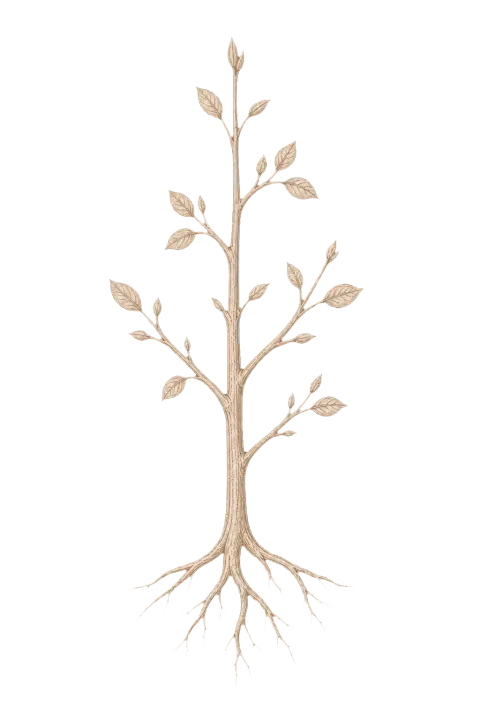
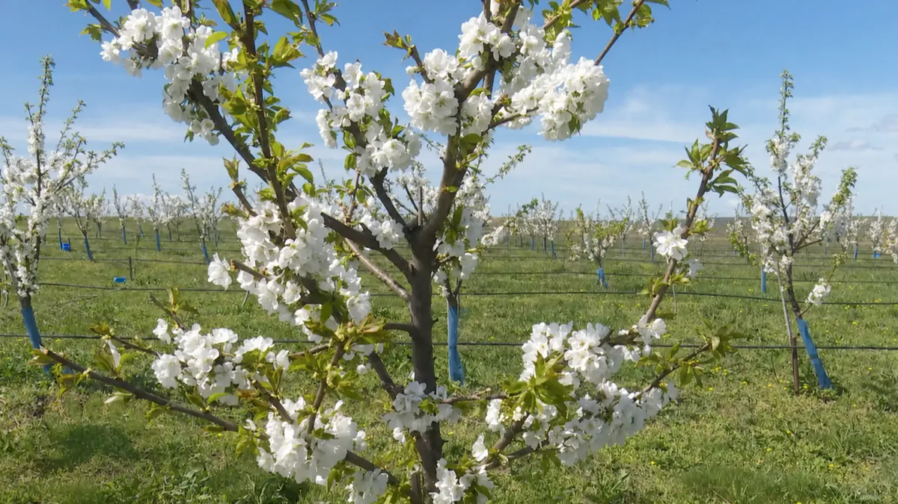
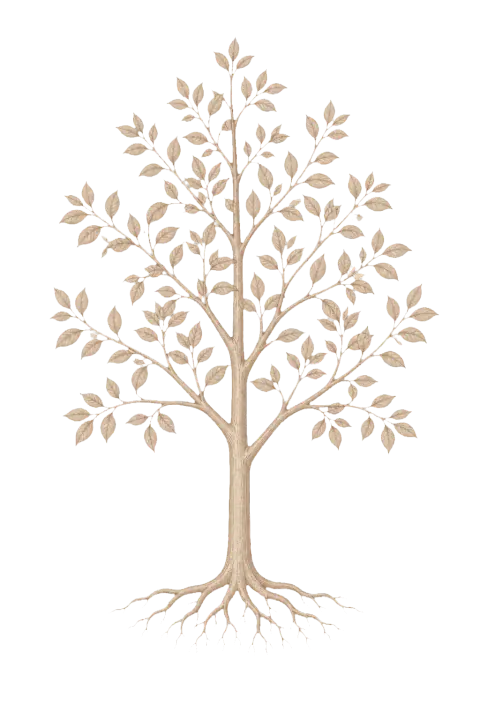
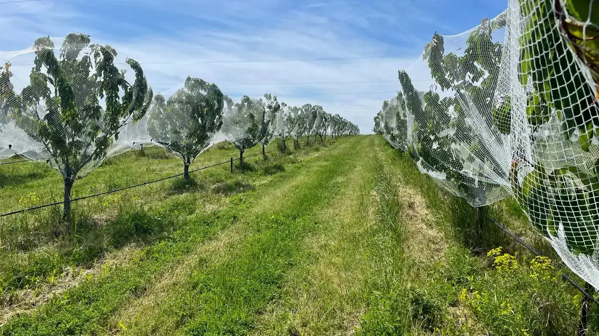
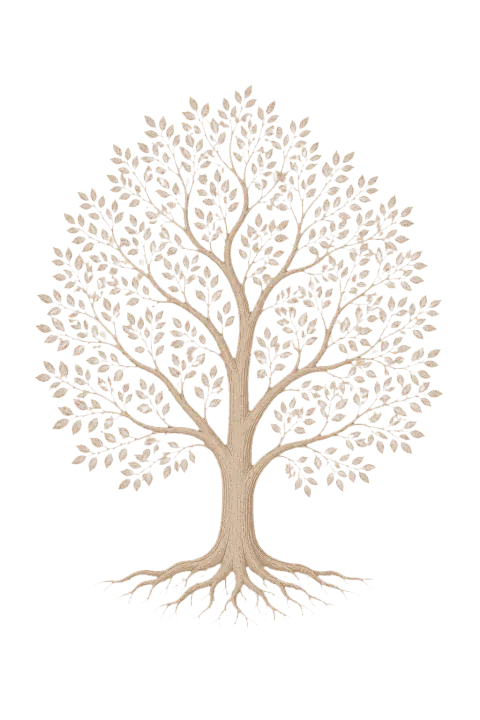
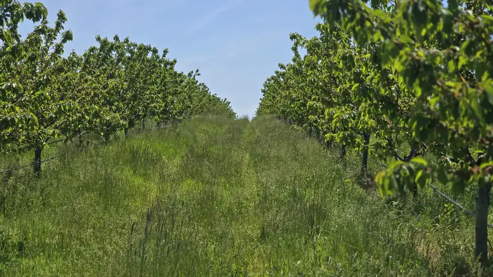
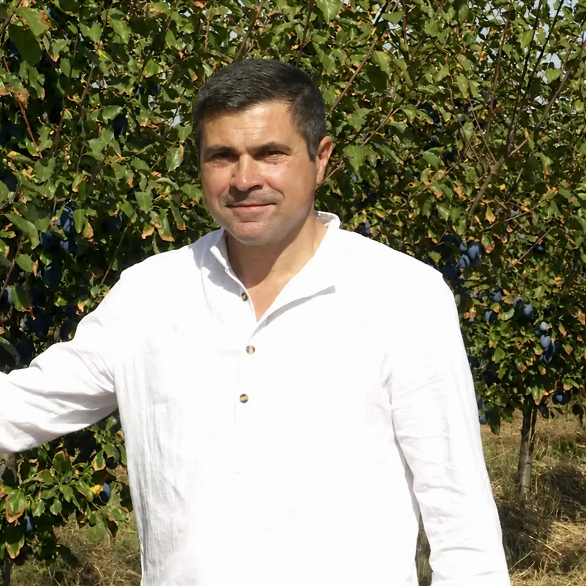
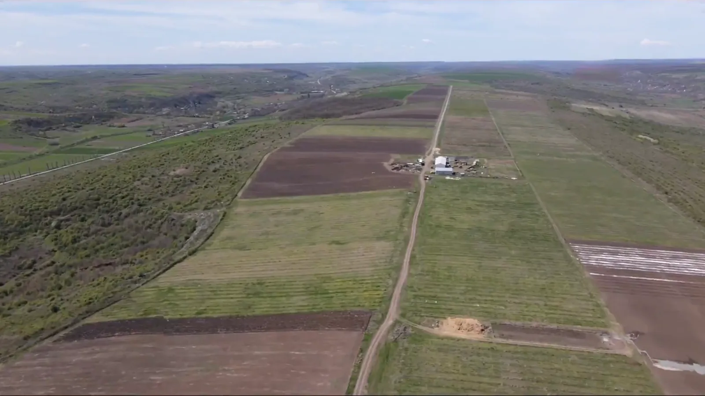
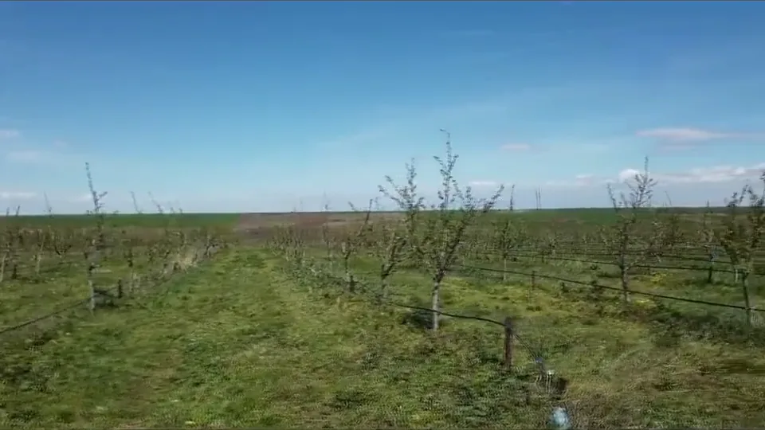

Povestea noastră
O livadă
crescută cu răbdare.
De la primii pomi până la recoltele de astăzi.
Povestea noastră
De la primii pomi până la recoltele de astăzi.
2012
Totul a început cu un vis simplu: să plantăm o livadă pe pământul nostru, cu grijă și respect pentru natură.


2014
Am pus în pământ primii puieți și am început să învățăm livada, zi de zi. Răbdarea și munca au devenit rădăcinile noastre.


Astăzi
Astăzi, livada noastră este matură, dar grija pentru fiecare pom rămâne aceeași ca în prima zi.



Nume de completat Proprietar, Ferma Fruct Brabova
Sunt aici în fiecare zi, de la răsărit până la lăsarea serii. Îmi cunosc fiecare pom, știu când are nevoie de apă, când de tăiere și când are nevoie doar de timp.
Nu grăbim natura și nu căutăm drumuri ușoare. Credem în munca făcută cu grijă, în respectul pentru pământ și în bucuria de a vedea roadele muncii noastre.
Livada ne învață răbdarea, iar noi îi oferim atenția noastră, în fiecare zi.
„O livadă nu se grăbește.”
Povești spuse de oamenii care cunosc livada cel mai bine.

Link în curând
Link în curând